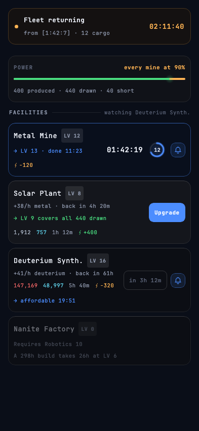
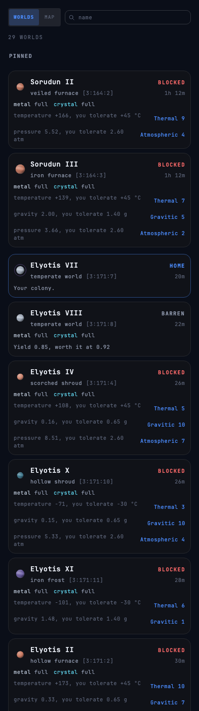
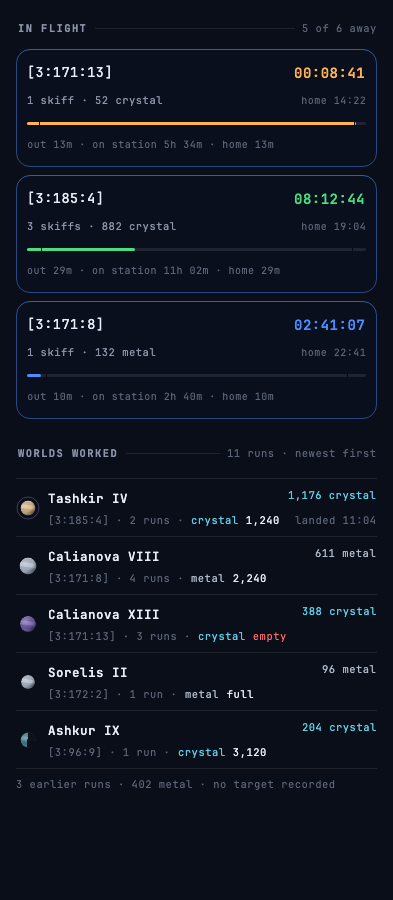
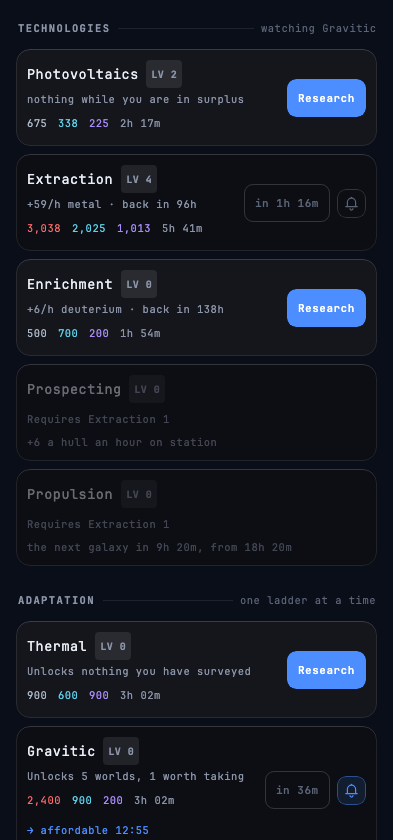

A space colonisation game that runs while your phone is in your pocket.
Five minutes to plan, hours for it to happen. Exponential cost curves, distance measured
in travel time, and fleets that do not come back. Single player against scripted empires
— multiplayer is the destination.
iPhoneTESTFLIGHTInternal testing — invitation only for now
Android 8.0 or newer. Android asks once for permission to install from your browser;
updates install over the top, so the colony survives them.
Screens

Colony
What your plant supplies against what your facilities draw, and every upgrade with
its cost, its build time and its countdown.

Galaxy
Every world you have surveyed, nearest first. The disc is drawn from what the world
is: fill is temperature, size is gravity, banding is pressure.

Fleets
What is away, where it went and when it lands. A run out is a run back; nothing
teleports.

Research
One slot, and every ladder wants it. What you learn decides which worlds will have
you.
Latest release
0.22.0LATEST
You are Dead Reckoning until you say otherwise. Tap your name or your mark on the strip above the resources and the settings sheet opens on your own face: a name you type, and a mark you pick. Both belong to the account rather than to the phone, so a name chosen on one device is the name the next one opens with.
Six marks, drawn and not photographed. Threshold and five others, each a different shape rather than five versions of one idea — one diagonal, one disc, one horizontal, one corner, one nest of arcs, one plumb line. There is no picture to upload and no colour to choose: every mark is the same hue, because every other colour in this game already means something.
Or build one nobody else has. A second face is a composer — four bodies, four paths and three ends, laid in three regions of one box so no two parts can ever collide. That is forty marks from eleven drawings, and the mark above the grid redraws as you tap, at the size the strip will draw it.
The name is free text, and there is nothing it can get wrong. Up to twenty-four characters; the counter appears at eighteen and the field simply stops accepting at twenty-four. Two commanders may share a name, so there is nothing for it to refuse. Empty is not a mistake either — the field shows Dead Reckoning in your own text's size and weight, so an emptied name is already showing you what saving it does.
A mark commits when you tap it; a name gets a button. Nothing about a keystroke means done, so Save name appears the moment your draft differs from what is saved and is gone again once it does not.
The strip says it is a door. Your mark, your name and your level are one target now, marked by the arrow the game already uses in → LV 13. The strip is exactly as tall as it was and the gear beside it is where it was.
With no signal the sheet still opens, and it does not pretend. The marks and the field go quiet, the save button is absent, and a line in amber says what is missing — a name is the account's, and the account is not reachable. Nothing is red and nothing is queued behind your back: a rename waits for you rather than for the network.
In Italian throughout — the six marks by name, and a composed one by the three parts it is made of.